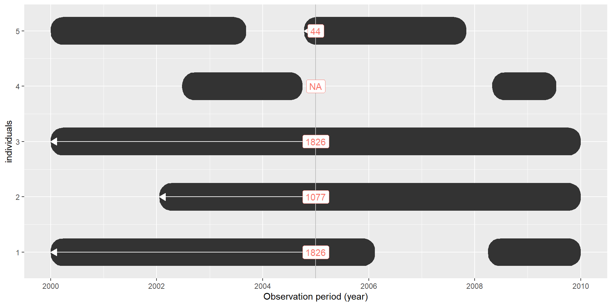

PatientProfiles
PatientProfiles
Let’s get started
Let’s get started
The following packages are needed:
install.packages(c("CDMConnector", "duckdb", "PatientProfiles", "here"))To conduct this tutorial we need to have eunomia data set.
library(CDMConnector)
library(duckdb)
library(PatientProfiles)
library(dplyr)
Sys.setenv("EUNOMIA_DATA_FOLDER" = here::here())
downloadEunomiaData()Let’s get started
Create our cdm object:
con <- dbConnect(duckdb(), eunomia_dir())
con<duckdb_connection 68a70 driver=<duckdb_driver 47630 dbdir='C:\Users\martics\AppData\Local\Temp\RtmpaC46NE\file9ac843d33dbf.duckdb' read_only=FALSE bigint=numeric>>cdm <- cdmFromCon(con = con, cdmSchema = "main", writeSchema = "main")
cdm── # OMOP CDM reference (duckdb) of Synthea synthetic health database ────────────────────────────────────────────────────────────• omop tables: person, observation_period, visit_occurrence, visit_detail, condition_occurrence, drug_exposure,
procedure_occurrence, device_exposure, measurement, observation, death, note, note_nlp, specimen, fact_relationship, location,
care_site, provider, payer_plan_period, cost, drug_era, dose_era, condition_era, metadata, cdm_source, concept, vocabulary,
domain, concept_class, concept_relationship, relationship, concept_synonym, concept_ancestor, source_to_concept_map,
drug_strength• cohort tables: -• achilles tables: -• other tables: -Create our first cohort
We are going to create a cohort of sinusitis:
cdm <- generateConceptCohortSet(
cdm = cdm,
name = "sinusitis",
conceptSet = list(
"bacterial_sinusitis" = 4294548,
"viral_sinusitis" = 40481087,
"chronic_sinusitis" = 257012,
"any_sinusitis" = c(4294548, 40481087, 257012)
),
limit = "all",
end = 0
)cdm── # OMOP CDM reference (duckdb) of Synthea synthetic health database ────────────────────────────────────────────────────────────• omop tables: person, observation_period, visit_occurrence, visit_detail, condition_occurrence, drug_exposure,
procedure_occurrence, device_exposure, measurement, observation, death, note, note_nlp, specimen, fact_relationship, location,
care_site, provider, payer_plan_period, cost, drug_era, dose_era, condition_era, metadata, cdm_source, concept, vocabulary,
domain, concept_class, concept_relationship, relationship, concept_synonym, concept_ancestor, source_to_concept_map,
drug_strength• cohort tables: sinusitis• achilles tables: -• other tables: -Create our first cohort
cdm$sinusitis# Source: table<main.sinusitis> [?? x 4]
# Database: DuckDB v0.10.0 [martics@Windows 10 x64:R 4.2.3/C:\Users\martics\AppData\Local\Temp\RtmpaC46NE\file9ac843d33dbf.duckdb]
cohort_definition_id subject_id cohort_start_date cohort_end_date
<int> <int> <date> <date>
1 1 155 2016-01-23 2016-01-23
2 1 280 1995-11-27 1995-11-27
3 1 393 1961-11-20 1961-11-20
4 1 2156 1994-04-03 1994-04-03
5 1 2392 1932-08-18 1932-08-18
6 1 3761 1980-08-27 1980-08-27
7 1 4764 2005-06-11 2005-06-11
8 2 81 1995-03-01 1995-03-01
9 2 97 1952-12-28 1952-12-28
10 2 163 2005-12-17 2005-12-17
# ℹ more rowsCreate our first cohort
settings(cdm$sinusitis)# A tibble: 4 × 6
cohort_definition_id cohort_name limit prior_observation future_observation end
<int> <chr> <chr> <dbl> <dbl> <dbl>
1 1 bacterial_sinusitis all 0 0 0
2 2 viral_sinusitis all 0 0 0
3 3 chronic_sinusitis all 0 0 0
4 4 any_sinusitis all 0 0 0Create our first cohort
cohortCount(cdm$sinusitis)# A tibble: 4 × 3
cohort_definition_id number_records number_subjects
<int> <int> <int>
1 1 939 786
2 2 17268 2686
3 3 825 812
4 4 19032 2688Create our first cohort
attrition(cdm$sinusitis)# A tibble: 4 × 7
cohort_definition_id number_records number_subjects reason_id reason excluded_records excluded_subjects
<int> <int> <int> <int> <chr> <int> <int>
1 1 939 786 1 Initial qualifying events 0 0
2 2 17268 2686 1 Initial qualifying events 0 0
3 3 825 812 1 Initial qualifying events 0 0
4 4 19032 2688 1 Initial qualifying events 0 0Introduction
To add characteristics to tables (sex, age, prior observation, future observation, birth date, …)
To identify intersections with cohorts, concepts and omop tables.
To summarise tables and put it in to summarseResults format.
addAge()
cdm$sinusitis |>
addAge()# Source: table<og_002_1718807104> [?? x 5]
# Database: DuckDB v0.10.0 [martics@Windows 10 x64:R 4.2.3/C:\Users\martics\AppData\Local\Temp\RtmpaC46NE\file9ac843d33dbf.duckdb]
cohort_definition_id subject_id cohort_start_date cohort_end_date age
<int> <int> <date> <date> <int>
1 1 280 1995-11-27 1995-11-27 57
2 1 393 1961-11-20 1961-11-20 4
3 1 2156 1994-04-03 1994-04-03 29
4 1 2392 1932-08-18 1932-08-18 16
5 1 3761 1980-08-27 1980-08-27 24
6 1 4764 2005-06-11 2005-06-11 36
7 2 97 1952-12-28 1952-12-28 9
8 2 163 2005-12-17 2005-12-17 39
9 2 183 1998-11-01 1998-11-01 24
10 2 338 1974-09-29 1974-09-29 7
# ℹ more rowsaddAge()
cdm$sinusitis |>
addAge(
indexDate = "cohort_start_date",
ageName = "age",
ageMissingMonth = 1,
ageMissingDay = 1,
ageImposeMonth = FALSE,
ageImposeDay = FALSE,
missingAgeGroupValue = "None"
)addAge()
Rows: ??
Columns: 17
Database: DuckDB v0.10.0 [martics@Windows 10 x64:R 4.2.3/C:\Users\martics\AppData\Local\Temp\RtmpaC46NE\file9ac843d33dbf.duckdb]
$ condition_occurrence_id <int> 4483, 4815, 5153, 5313, 5513, 5655, 6143, 6309, 6641, 6815, 6973, 7139, 7305, 7471, 7803, …
$ person_id <int> 263, 283, 304, 312, 326, 334, 362, 370, 392, 403, 410, 419, 430, 439, 455, 469, 492, 505, …
$ condition_concept_id <int> 4112343, 28060, 257012, 4134304, 28060, 40481087, 4113008, 372328, 260139, 40481087, 40481…
$ condition_start_date <date> 2015-10-02, 1984-02-15, 1974-07-30, 1991-05-14, 1979-09-23, 1999-07-12, 1998-07-03, 1970-…
$ condition_start_datetime <dttm> 2015-10-02, 1984-02-15, 1974-07-30, 1991-05-14, 1979-09-23, 1999-07-12, 1998-07-03, 1970-…
$ condition_end_date <date> 2015-10-14, 1984-02-25, 1974-11-05, 1991-06-13, 1979-10-06, 1999-07-19, 1998-07-17, 1970-…
$ condition_end_datetime <dttm> 2015-10-14, 1984-02-25, 1974-11-05, 1991-06-13, 1979-10-06, 1999-07-19, 1998-07-17, 1970-…
$ condition_type_concept_id <int> 32020, 32020, 32020, 32020, 32020, 32020, 32020, 32020, 32020, 32020, 32020, 32020, 32020,…
$ condition_status_concept_id <int> 0, 0, 0, 0, 0, 0, 0, 0, 0, 0, 0, 0, 0, 0, 0, 0, 0, 0, 0, 0, 0, 0, 0, 0, 0, 0, 0, 0, 0, 0, …
$ stop_reason <chr> NA, NA, NA, NA, NA, NA, NA, NA, NA, NA, NA, NA, NA, NA, NA, NA, NA, NA, NA, NA, NA, NA, NA…
$ provider_id <int> NA, NA, NA, NA, NA, NA, NA, NA, NA, NA, NA, NA, NA, NA, NA, NA, NA, NA, NA, NA, NA, NA, NA…
$ visit_occurrence_id <int> 17479, 18859, 20239, 20658, 21553, 22124, 24055, 24601, 25716, 26490, 27232, 27709, 28496,…
$ visit_detail_id <int> 0, 0, 0, 0, 0, 0, 0, 0, 0, 0, 0, 0, 0, 0, 0, 0, 0, 0, 0, 0, 0, 0, 0, 0, 0, 0, 0, 0, 0, 0, …
$ condition_source_value <chr> "195662009", "43878008", "40055000", "263102004", "43878008", "444814009", "284549007", "6…
$ condition_source_concept_id <int> 4112343, 28060, 257012, 4134304, 28060, 40481087, 4113008, 372328, 260139, 40481087, 40481…
$ condition_status_source_value <chr> NA, NA, NA, NA, NA, NA, NA, NA, NA, NA, NA, NA, NA, NA, NA, NA, NA, NA, NA, NA, NA, NA, NA…
$ age <int> 61, 3, 18, 19, 9, 64, 17, 6, 3, 13, 56, 13, 67, 12, 1, 68, 36, 43, 20, 23, 47, 41, 5, 30, …add also age groups
# Source: table<og_004_1718807105> [?? x 6]
# Database: DuckDB v0.10.0 [martics@Windows 10 x64:R 4.2.3/C:\Users\martics\AppData\Local\Temp\RtmpaC46NE\file9ac843d33dbf.duckdb]
cohort_definition_id subject_id cohort_start_date cohort_end_date age age_group
<int> <int> <date> <date> <int> <chr>
1 1 280 1995-11-27 1995-11-27 57 20 or above
2 1 393 1961-11-20 1961-11-20 4 0 to 19
3 1 2156 1994-04-03 1994-04-03 29 20 or above
4 1 2392 1932-08-18 1932-08-18 16 0 to 19
5 1 3761 1980-08-27 1980-08-27 24 20 or above
6 1 4764 2005-06-11 2005-06-11 36 20 or above
7 2 97 1952-12-28 1952-12-28 9 0 to 19
8 2 163 2005-12-17 2005-12-17 39 20 or above
9 2 183 1998-11-01 1998-11-01 24 20 or above
10 2 338 1974-09-29 1974-09-29 7 0 to 19
# ℹ more rowsadd also age groups
cdm$sinusitis |>
addAge(ageGroup = list(
"analysis" = list("child" = c(0, 17), "adult" = c(18, Inf)),
"age_group" = list(c(0, 19), c(20, 39), c(40, 59), c(60, 79), c(80, Inf))
))# Source: table<og_005_1718807105> [?? x 7]
# Database: DuckDB v0.10.0 [martics@Windows 10 x64:R 4.2.3/C:\Users\martics\AppData\Local\Temp\RtmpaC46NE\file9ac843d33dbf.duckdb]
cohort_definition_id subject_id cohort_start_date cohort_end_date age analysis age_group
<int> <int> <date> <date> <int> <chr> <chr>
1 1 280 1995-11-27 1995-11-27 57 adult 40 to 59
2 1 393 1961-11-20 1961-11-20 4 child 0 to 19
3 1 2156 1994-04-03 1994-04-03 29 adult 20 to 39
4 1 2392 1932-08-18 1932-08-18 16 child 0 to 19
5 1 3761 1980-08-27 1980-08-27 24 adult 20 to 39
6 1 4764 2005-06-11 2005-06-11 36 adult 20 to 39
7 2 97 1952-12-28 1952-12-28 9 child 0 to 19
8 2 163 2005-12-17 2005-12-17 39 adult 20 to 39
9 2 183 1998-11-01 1998-11-01 24 adult 20 to 39
10 2 338 1974-09-29 1974-09-29 7 child 0 to 19
# ℹ more rowsaddSex()
cdm$sinusitis |>
addSex()# Source: table<og_006_1718807106> [?? x 5]
# Database: DuckDB v0.10.0 [martics@Windows 10 x64:R 4.2.3/C:\Users\martics\AppData\Local\Temp\RtmpaC46NE\file9ac843d33dbf.duckdb]
cohort_definition_id subject_id cohort_start_date cohort_end_date sex
<int> <int> <date> <date> <chr>
1 1 155 2016-01-23 2016-01-23 Female
2 1 393 1961-11-20 1961-11-20 Female
3 1 2156 1994-04-03 1994-04-03 Female
4 1 2392 1932-08-18 1932-08-18 Female
5 1 3761 1980-08-27 1980-08-27 Female
6 1 4764 2005-06-11 2005-06-11 Male
7 2 81 1995-03-01 1995-03-01 Male
8 2 97 1952-12-28 1952-12-28 Female
9 2 163 2005-12-17 2005-12-17 Female
10 2 183 1998-11-01 1998-11-01 Male
# ℹ more rowsaddSex()
cdm$sinusitis |>
addSex(
sexName = "gender",
missingSexValue = "Missing"
)# Source: table<og_007_1718807106> [?? x 5]
# Database: DuckDB v0.10.0 [martics@Windows 10 x64:R 4.2.3/C:\Users\martics\AppData\Local\Temp\RtmpaC46NE\file9ac843d33dbf.duckdb]
cohort_definition_id subject_id cohort_start_date cohort_end_date gender
<int> <int> <date> <date> <chr>
1 1 155 2016-01-23 2016-01-23 Female
2 1 393 1961-11-20 1961-11-20 Female
3 1 2156 1994-04-03 1994-04-03 Female
4 1 2392 1932-08-18 1932-08-18 Female
5 1 3761 1980-08-27 1980-08-27 Female
6 1 4764 2005-06-11 2005-06-11 Male
7 2 81 1995-03-01 1995-03-01 Male
8 2 97 1952-12-28 1952-12-28 Female
9 2 163 2005-12-17 2005-12-17 Female
10 2 183 1998-11-01 1998-11-01 Male
# ℹ more rowsaddSex()
Rows: ??
Columns: 24
Database: DuckDB v0.10.0 [martics@Windows 10 x64:R 4.2.3/C:\Users\martics\AppData\Local\Temp\RtmpaC46NE\file9ac843d33dbf.duckdb]
$ drug_exposure_id <int> 60926, 26418, 54785, 47027, 38712, 21897, 52764, 8667, 10459, 10524, 9646, 9653, 86272, 974…
$ person_id <int> 1332, 576, 4550, 3895, 3199, 476, 1154, 186, 871, 877, 806, 806, 1892, 817, 820, 1746, 2230…
$ drug_concept_id <int> 40213198, 40213260, 1118084, 40162522, 19059056, 40213296, 40213160, 40213160, 1127078, 112…
$ drug_exposure_start_date <date> 2010-10-06, 2017-10-25, 2000-11-13, 1982-03-30, 1975-08-19, 2008-05-31, 1971-05-16, 1976-0…
$ drug_exposure_start_datetime <dttm> 2010-10-06, 2017-10-25, 2000-11-13, 1982-03-30, 1975-08-19, 2008-05-31, 1971-05-16, 1976-0…
$ drug_exposure_end_date <date> 2010-10-06, 2017-10-25, 2000-11-13, 1982-03-30, 1975-09-02, 2008-05-31, 1971-05-16, 1976-0…
$ drug_exposure_end_datetime <dttm> 2010-10-06, 2017-10-25, 2000-11-13, 1982-03-30, 1975-09-02, 2008-05-31, 1971-05-16, 1976-0…
$ verbatim_end_date <date> 2010-10-06, 2017-10-25, NA, NA, 1975-09-02, 2008-05-31, 1971-05-16, 1976-05-31, 1968-01-08…
$ drug_type_concept_id <int> 581452, 581452, 38000177, 38000177, 38000177, 581452, 581452, 581452, 38000177, 38000177, 3…
$ stop_reason <chr> NA, NA, NA, NA, NA, NA, NA, NA, NA, NA, NA, NA, NA, NA, NA, NA, NA, NA, NA, NA, NA, NA, NA,…
$ refills <int> 0, 0, 0, 0, 0, 0, 0, 0, 0, 0, 0, 0, 0, 0, 0, 0, 0, 0, 0, 0, 0, 0, 0, 0, 0, 0, 0, 0, 0, 0, 0…
$ quantity <dbl> 0, 0, 0, 0, 0, 0, 0, 0, 0, 0, 0, 0, 0, 0, 0, 0, 0, 0, 0, 0, 0, 0, 0, 0, 0, 0, 0, 0, 0, 0, 0…
$ days_supply <int> 0, 0, 0, 0, 14, 0, 0, 0, 60, 14, 28, 7, 0, 14, 11, 7, 0, 0, 14, 0, 0, 91, 21, 0, 0, 360, 7,…
$ sig <chr> NA, NA, NA, NA, NA, NA, NA, NA, NA, NA, NA, NA, NA, NA, NA, NA, NA, NA, NA, NA, NA, NA, NA,…
$ route_concept_id <int> 0, 0, 0, 0, 0, 0, 0, 0, 0, 0, 0, 0, 0, 0, 0, 0, 0, 0, 0, 0, 0, 0, 0, 0, 0, 0, 0, 0, 0, 0, 0…
$ lot_number <chr> "0", "0", "0", "0", "0", "0", "0", "0", "0", "0", "0", "0", "0", "0", "0", "0", "0", "0", "…
$ provider_id <int> 0, 0, 0, 0, 0, 0, 0, 0, 0, 0, 0, 0, 0, 0, 0, 0, 0, 0, 0, 0, 0, 0, 0, 0, 0, 0, 0, 0, 0, 0, 0…
$ visit_occurrence_id <int> 88400, 38145, 303185, 259023, 212733, 31764, 76224, 12657, 57955, 58440, 53468, 53505, 1260…
$ visit_detail_id <int> 0, 0, 0, 0, 0, 0, 0, 0, 0, 0, 0, 0, 0, 0, 0, 0, 0, 0, 0, 0, 0, 0, 0, 0, 0, 0, 0, 0, 0, 0, 0…
$ drug_source_value <chr> "133", "121", "00025152531", "857005", "243670", "52", "10", "10", "282464", "313782", "282…
$ drug_source_concept_id <int> 40213198, 40213260, 44923712, 40162522, 19059056, 40213296, 40213160, 40213160, 1127078, 11…
$ route_source_value <chr> NA, NA, NA, NA, NA, NA, NA, NA, NA, NA, NA, NA, NA, NA, NA, NA, NA, NA, NA, NA, NA, NA, NA,…
$ dose_unit_source_value <chr> NA, NA, NA, NA, NA, NA, NA, NA, NA, NA, NA, NA, NA, NA, NA, NA, NA, NA, NA, NA, NA, NA, NA,…
$ sex <chr> "Male", "Male", "Male", "Female", "Male", "Male", "Female", "Female", "Female", "Female", "…Your turn
For each cohort in the sinusitis table, can you find out have many subject are age 18 or older and are male?
Solution
cdm$sinusitis |> addSex() |> addAge() |> filter(age >= 18 & sex == "Male") |>
group_by(cohort_definition_id) |> summarise(count = n())# Source: SQL [4 x 2]
# Database: DuckDB v0.10.0 [martics@Windows 10 x64:R 4.2.3/C:\Users\martics\AppData\Local\Temp\RtmpaC46NE\file9ac843d33dbf.duckdb]
cohort_definition_id count
<int> <dbl>
1 1 317
2 2 5895
3 3 258
4 4 6470addPriorObservation()
addPriorObservation()

addPriorObservation()
addPriorObservation()
cdm$sinusitis |>
addPriorObservation()# Source: table<og_011_1718807108> [?? x 5]
# Database: DuckDB v0.10.0 [martics@Windows 10 x64:R 4.2.3/C:\Users\martics\AppData\Local\Temp\RtmpaC46NE\file9ac843d33dbf.duckdb]
cohort_definition_id subject_id cohort_start_date cohort_end_date prior_observation
<int> <int> <date> <date> <int>
1 1 280 1995-11-27 1995-11-27 20849
2 1 393 1961-11-20 1961-11-20 1776
3 1 2156 1994-04-03 1994-04-03 10846
4 1 2392 1932-08-18 1932-08-18 6040
5 1 3761 1980-08-27 1980-08-27 8894
6 1 4764 2005-06-11 2005-06-11 13443
7 2 97 1952-12-28 1952-12-28 3450
8 2 163 2005-12-17 2005-12-17 14417
9 2 183 1998-11-01 1998-11-01 8774
10 2 338 1974-09-29 1974-09-29 2720
# ℹ more rowsaddPriorObservation()
cdm$condition_occurrence |>
addPriorObservation(
indexDate = "condition_start_date",
priorObservationName = "start_observation", # name of the column
priorObservationType = "date" # default = "days"
) |>
glimpse()Rows: ??
Columns: 17
Database: DuckDB v0.10.0 [martics@Windows 10 x64:R 4.2.3/C:\Users\martics\AppData\Local\Temp\RtmpaC46NE\file9ac843d33dbf.duckdb]
$ condition_occurrence_id <int> 4483, 4657, 4815, 4981, 5153, 5313, 5655, 5811, 5977, 6143, 6309, 6500, 6815, 6973, 7139, …
$ person_id <int> 263, 273, 283, 293, 304, 312, 334, 341, 351, 362, 370, 384, 403, 410, 419, 430, 449, 469, …
$ condition_concept_id <int> 4112343, 192671, 28060, 378001, 257012, 4134304, 40481087, 40481087, 40481087, 4113008, 37…
$ condition_start_date <date> 2015-10-02, 2011-10-10, 1984-02-15, 2005-11-07, 1974-07-30, 1991-05-14, 1999-07-12, 1990-…
$ condition_start_datetime <dttm> 2015-10-02, 2011-10-10, 1984-02-15, 2005-11-07, 1974-07-30, 1991-05-14, 1999-07-12, 1990-…
$ condition_end_date <date> 2015-10-14, NA, 1984-02-25, 2005-12-07, 1974-11-05, 1991-06-13, 1999-07-19, 1990-10-05, 1…
$ condition_end_datetime <dttm> 2015-10-14, NA, 1984-02-25, 2005-12-07, 1974-11-05, 1991-06-13, 1999-07-19, 1990-10-05, 1…
$ condition_type_concept_id <int> 32020, 32020, 32020, 32020, 32020, 32020, 32020, 32020, 32020, 32020, 32020, 32020, 32020,…
$ condition_status_concept_id <int> 0, 0, 0, 0, 0, 0, 0, 0, 0, 0, 0, 0, 0, 0, 0, 0, 0, 0, 0, 0, 0, 0, 0, 0, 0, 0, 0, 0, 0, 0, …
$ stop_reason <chr> NA, NA, NA, NA, NA, NA, NA, NA, NA, NA, NA, NA, NA, NA, NA, NA, NA, NA, NA, NA, NA, NA, NA…
$ provider_id <int> NA, NA, NA, NA, NA, NA, NA, NA, NA, NA, NA, NA, NA, NA, NA, NA, NA, NA, NA, NA, NA, NA, NA…
$ visit_occurrence_id <int> 17479, 18192, 18859, 19515, 20239, 20658, 22124, 22784, 23405, 24055, 24601, 25351, 26490,…
$ visit_detail_id <int> 0, 0, 0, 0, 0, 0, 0, 0, 0, 0, 0, 0, 0, 0, 0, 0, 0, 0, 0, 0, 0, 0, 0, 0, 0, 0, 0, 0, 0, 0, …
$ condition_source_value <chr> "195662009", "K92.2", "43878008", "62106007", "40055000", "263102004", "444814009", "44481…
$ condition_source_concept_id <int> 4112343, 35208414, 28060, 378001, 257012, 4134304, 40481087, 40481087, 40481087, 4113008, …
$ condition_status_source_value <chr> NA, NA, NA, NA, NA, NA, NA, NA, NA, NA, NA, NA, NA, NA, NA, NA, NA, NA, NA, NA, NA, NA, NA…
$ start_observation <date> 1954-06-20, 1975-09-14, 1980-09-01, 1964-10-13, 1956-05-07, 1972-01-24, 1935-06-06, 1960-…addFutureObservation()
addFutureObservation()

addFutureObservation()

addFutureObservation()

addFutureObservation()
cdm$sinusitis |>
addFutureObservation()# Source: table<og_013_1718807109> [?? x 5]
# Database: DuckDB v0.10.0 [martics@Windows 10 x64:R 4.2.3/C:\Users\martics\AppData\Local\Temp\RtmpaC46NE\file9ac843d33dbf.duckdb]
cohort_definition_id subject_id cohort_start_date cohort_end_date future_observation
<int> <int> <date> <date> <int>
1 1 280 1995-11-27 1995-11-27 8590
2 1 393 1961-11-20 1961-11-20 20869
3 1 2156 1994-04-03 1994-04-03 9118
4 1 2392 1932-08-18 1932-08-18 31618
5 1 3761 1980-08-27 1980-08-27 13821
6 1 4764 2005-06-11 2005-06-11 4827
7 2 97 1952-12-28 1952-12-28 23983
8 2 163 2005-12-17 2005-12-17 4588
9 2 183 1998-11-01 1998-11-01 7440
10 2 338 1974-09-29 1974-09-29 16285
# ℹ more rowsaddInObservation()
addInObservation()

addInObservation()

addInObservation()
addInObservation()
cdm$condition_occurrence |>
addInObservation(indexDate = "condition_start_date") |>
filter(in_observation == 0) |>
select("condition_concept_id", "person_id", "condition_start_date", "in_observation")# Source: SQL [?? x 4]
# Database: DuckDB v0.10.0 [martics@Windows 10 x64:R 4.2.3/C:\Users\martics\AppData\Local\Temp\RtmpaC46NE\file9ac843d33dbf.duckdb]
condition_concept_id person_id condition_start_date in_observation
<int> <int> <date> <int>
1 4029498 539 1933-03-26 0
2 80180 156 2019-01-30 0
3 4029498 211 1967-10-12 0
4 80180 588 2019-06-08 0
5 80180 339 2019-06-21 0
6 80180 220 2019-05-15 0
7 80180 843 2017-09-04 0
8 80180 884 2017-09-16 0
9 80180 1100 2019-05-08 0
10 80180 814 2019-05-24 0
# ℹ more rowsaddInObservation() window
cdm$sinusitis |>
addInObservation(
indexDate = "cohort_start_date",
window = list("20yr" = c(7300, 7665), "40yr" = c(14600, 14965), "60yr" = c(21900, 22265)),
completeInterval = T,
nameStyle = "obs_{window_name}"
)# Source: table<og_015_1718807111> [?? x 7]
# Database: DuckDB v0.10.0 [martics@Windows 10 x64:R 4.2.3/C:\Users\martics\AppData\Local\Temp\RtmpaC46NE\file9ac843d33dbf.duckdb]
cohort_definition_id subject_id cohort_start_date cohort_end_date obs_20yr obs_40yr obs_60yr
<int> <int> <date> <date> <int> <int> <int>
1 1 280 1995-11-27 1995-11-27 1 0 0
2 1 393 1961-11-20 1961-11-20 1 1 0
3 1 2156 1994-04-03 1994-04-03 1 0 0
4 1 2392 1932-08-18 1932-08-18 1 1 1
5 1 3761 1980-08-27 1980-08-27 1 0 0
6 1 4764 2005-06-11 2005-06-11 0 0 0
7 2 97 1952-12-28 1952-12-28 1 1 1
8 2 163 2005-12-17 2005-12-17 0 0 0
9 2 183 1998-11-01 1998-11-01 0 0 0
10 2 338 1974-09-29 1974-09-29 1 1 0
# ℹ more rowsYour turn
Can you find out number of record with prior observation greater than 365 days in condition occurrence table using condition_start_date as index date?
Solution
cdm$condition_occurrence |>
addPriorObservation(indexDate = "condition_start_date") |>
filter(prior_observation > 365) |>
summarise(count = n())# Source: SQL [1 x 1]
# Database: DuckDB v0.10.0 [martics@Windows 10 x64:R 4.2.3/C:\Users\martics\AppData\Local\Temp\RtmpaC46NE\file9ac843d33dbf.duckdb]
count
<dbl>
1 63608addDateOfBirth()
cdm$sinusitis |>
addDateOfBirth()# Source: table<og_017_1718807112> [?? x 5]
# Database: DuckDB v0.10.0 [martics@Windows 10 x64:R 4.2.3/C:\Users\martics\AppData\Local\Temp\RtmpaC46NE\file9ac843d33dbf.duckdb]
cohort_definition_id subject_id cohort_start_date cohort_end_date date_of_birth
<int> <int> <date> <date> <date>
1 1 155 2016-01-23 2016-01-23 1954-05-07
2 1 393 1961-11-20 1961-11-20 1957-01-09
3 1 2156 1994-04-03 1994-04-03 1964-07-23
4 1 2392 1932-08-18 1932-08-18 1916-02-04
5 1 3761 1980-08-27 1980-08-27 1956-04-21
6 1 4764 2005-06-11 2005-06-11 1968-08-21
7 2 81 1995-03-01 1995-03-01 1956-03-21
8 2 97 1952-12-28 1952-12-28 1943-07-19
9 2 163 2005-12-17 2005-12-17 1966-06-28
10 2 183 1998-11-01 1998-11-01 1974-10-24
# ℹ more rowsaddDemographics()
cdm$sinusitis |>
addDemographics()# Source: table<og_018_1718807112> [?? x 8]
# Database: DuckDB v0.10.0 [martics@Windows 10 x64:R 4.2.3/C:\Users\martics\AppData\Local\Temp\RtmpaC46NE\file9ac843d33dbf.duckdb]
cohort_definition_id subject_id cohort_start_date cohort_end_date age sex prior_observation future_observation
<int> <int> <date> <date> <int> <chr> <int> <int>
1 1 280 1995-11-27 1995-11-27 57 Female 20849 8590
2 1 393 1961-11-20 1961-11-20 4 Female 1776 20869
3 1 2156 1994-04-03 1994-04-03 29 Female 10846 9118
4 1 2392 1932-08-18 1932-08-18 16 Female 6040 31618
5 1 3761 1980-08-27 1980-08-27 24 Female 8894 13821
6 1 4764 2005-06-11 2005-06-11 36 Male 13443 4827
7 2 97 1952-12-28 1952-12-28 9 Female 3450 23983
8 2 163 2005-12-17 2005-12-17 39 Female 14417 4588
9 2 183 1998-11-01 1998-11-01 24 Male 8774 7440
10 2 338 1974-09-29 1974-09-29 7 Female 2720 16285
# ℹ more rowsaddDemographics()
cdm$sinusitis |>
addDemographics(
age = TRUE,
ageGroup = list("child" = c(0, 17), "adults" = c(18, Inf)),
sex = FALSE,
priorObservation = TRUE,
priorObservationName = "observation_start",
priorObservationType = "date",
futureObservation = TRUE,
futureObservationName = "observation_end",
futureObservationType = "date"
)# Source: table<og_019_1718807113> [?? x 8]
# Database: DuckDB v0.10.0 [martics@Windows 10 x64:R 4.2.3/C:\Users\martics\AppData\Local\Temp\RtmpaC46NE\file9ac843d33dbf.duckdb]
cohort_definition_id subject_id cohort_start_date cohort_end_date age age_group observation_start observation_end
<int> <int> <date> <date> <int> <chr> <date> <date>
1 1 280 1995-11-27 1995-11-27 57 adults 1938-10-28 2019-06-04
2 1 393 1961-11-20 1961-11-20 4 child 1957-01-09 2019-01-09
3 1 2156 1994-04-03 1994-04-03 29 adults 1964-07-23 2019-03-21
4 1 2392 1932-08-18 1932-08-18 16 child 1916-02-04 2019-03-13
5 1 3761 1980-08-27 1980-08-27 24 adults 1956-04-21 2018-06-30
6 1 4764 2005-06-11 2005-06-11 36 adults 1968-08-21 2018-08-29
7 2 97 1952-12-28 1952-12-28 9 child 1943-07-19 2018-08-27
8 2 163 2005-12-17 2005-12-17 39 adults 1966-06-28 2018-07-10
9 2 183 1998-11-01 1998-11-01 24 adults 1974-10-24 2019-03-16
10 2 338 1974-09-29 1974-09-29 7 child 1967-04-19 2019-05-01
# ℹ more rowsrecord cohort attrition
attrition(cdm$sinusitis)# A tibble: 4 × 7
cohort_definition_id number_records number_subjects reason_id reason excluded_records excluded_subjects
<int> <int> <int> <int> <chr> <int> <int>
1 1 939 786 1 Initial qualifying events 0 0
2 2 17268 2686 1 Initial qualifying events 0 0
3 3 825 812 1 Initial qualifying events 0 0
4 4 19032 2688 1 Initial qualifying events 0 0record cohort attrition
attrition(cdm$new_sinusitis)# A tibble: 8 × 7
cohort_definition_id number_records number_subjects reason_id reason excluded_records excluded_subjects
<int> <int> <int> <int> <chr> <int> <int>
1 1 939 786 1 Initial qualifying events 0 0
2 1 494 418 2 Restrict to Females 445 368
3 2 17268 2686 1 Initial qualifying events 0 0
4 2 8824 1371 2 Restrict to Females 8444 1315
5 3 825 812 1 Initial qualifying events 0 0
6 3 427 424 2 Restrict to Females 398 388
7 4 19032 2688 1 Initial qualifying events 0 0
8 4 9745 1371 2 Restrict to Females 9287 1317record cohort attrition
attrition(cdm$new_sinusitis)# A tibble: 12 × 7
cohort_definition_id number_records number_subjects reason_id reason excluded_records excluded_subjects
<int> <int> <int> <int> <chr> <int> <int>
1 1 939 786 1 Initial qualifying events 0 0
2 1 494 418 2 Restrict to Females 445 368
3 1 154 147 3 Restrict to under 18 340 271
4 2 17268 2686 1 Initial qualifying events 0 0
5 2 8824 1371 2 Restrict to Females 8444 1315
6 2 2623 1182 3 Restrict to under 18 6201 189
7 3 825 812 1 Initial qualifying events 0 0
8 3 427 424 2 Restrict to Females 398 388
9 3 154 154 3 Restrict to under 18 273 270
10 4 19032 2688 1 Initial qualifying events 0 0
11 4 9745 1371 2 Restrict to Females 9287 1317
12 4 2931 1221 3 Restrict to under 18 6814 150cohortCount are also updated
cohortCount(cdm$new_sinusitis)# A tibble: 4 × 3
cohort_definition_id number_records number_subjects
<int> <int> <int>
1 1 154 147
2 2 2623 1182
3 3 154 154
4 4 2931 1221Your turn
Can you create a new cohort starting with all bronchitis concept set (258780, 260139) records.
Then restrict the records to ones with:
1- Just Male
2- 25 or above
3- With at least 365 days of prior observation
# A tibble: 4 × 7
cohort_definition_id number_records number_subjects reason_id reason excluded_records excluded_subjects
<int> <int> <int> <int> <chr> <int> <int>
1 1 8232 2546 1 Initial qualifying events 0 0
2 1 4115 1245 2 Just Male 4117 1301
3 1 2235 1039 3 25 or above 1880 206
4 1 2235 1039 4 At least 365 days of prior obs… 0 0Solution
cdm <- generateConceptCohortSet(
cdm = cdm,
name = "bronchitis",
conceptSet = list(bronchitis = c(258780, 260139)),
end = 0,
limit = "all"
)
cdm$bronchitis <- cdm$bronchitis |>
addSex() |>
filter(sex == "Male") |>
select(-"sex") |>
compute(name = "bronchitis", temporary = FALSE) |>
recordCohortAttrition("Just Male") |>
addAge() |>
filter(age >= 25) |>
select(-"age") |>
compute(name = "bronchitis", temporary = FALSE) |>
recordCohortAttrition("25 or above") |>
addPriorObservation() |>
filter(prior_observation >= 365) |>
select(-"prior_observation") |>
compute(name = "bronchitis", temporary = FALSE) |>
recordCohortAttrition("At least 365 days of prior observation")
attrition(cdm$bronchitis)# A tibble: 4 × 7
cohort_definition_id number_records number_subjects reason_id reason excluded_records excluded_subjects
<int> <int> <int> <int> <chr> <int> <int>
1 1 8232 2546 1 Initial qualifying events 0 0
2 1 4115 1245 2 Just Male 4117 1301
3 1 2235 1039 3 25 or above 1880 206
4 1 2235 1039 4 At least 365 days of prior obs… 0 0add intersections overview
origin table
indexDateColumn that indicates the “origin” date.windowWindow list to specify the interest interval from theindexDate.censorDateColumn that indicates the “end” of followup.
add intersections overview
target
Cohort:
targetCohortTable+targetCohortId+ (targetStartDate)Concept:
conceptSet+ (targetStartDate)Table:
tableName+ (targetStartDate)
add intersections overview
Estimate
flag: NA, 0, 1 (extra argument:targetEndDate)count: NA/integer (extra argument:targetEndDate)date: NA/date (extra argument:order)days: NA/integer (extra argument:order)
12 functions
Let’s create some useful cohorts
cdm <- generateConceptCohortSet(
cdm = cdm,
conceptSet = list(
"myocardial_infarction" = c(4329847),
"fracture" = c(4048695, 4142905, 4278672, 4237458, 4230399, 40480160, 4066995, 4059173, 4134304),
"allergy" = c(4084167, 40486433, 4280726, 4048171),
"infection" = c(4116491, 433125, 4056621, 40481087, 4112343),
"pneumonia" = c(255848),
"asthma" = c(4051466, 317009)
),
limit = "all",
end = 0,
name = "conditions"
)
cdm <- generateConceptCohortSet(
cdm = cdm,
conceptSet = list(
"antineoplastic_and_immunomodulating_agents" = c(1118088, 1118084, 40224132, 19010482, 40224805, 19007333, 1500211, 1305058, 1503184, 19134077, 1549786),
"musculoskeletal_system" = c(1118088, 1557272, 40162359, 1124300, 1115008, 40173590, 1118084, 42707627, 19019273, 19019979, 19078461, 19003953, 1112807, 1115171, 1177480),
"antiinfectives_for_systemic_use" = c(19129655, 1728416, 920293, 19074841, 920300, 920334, 19074843, 19075001, 19073183, 19073188, 1713671, 1729720, 19006318, 1778162, 46275444, 1717327, 1738521, 1741122, 1759842, 1713332, 1746114, 1768849, 46233710, 19133873, 46233988, 19133905),
"nervous_system" = c(708298, 701322, 723013, 1129625, 1110410, 753626, 1124957, 1102527, 1125315, 782043, 791967, 1119510, 19078219, 757627, 40220386, 740275, 40223774, 1154029, 1127078, 1127433, 40222846, 19057271, 40223768, 45892894, 705944, 715997, 19078924, 19076374, 19077572, 40229134, 19059056, 19016749, 40236446, 19074679, 742185, 40231925, 1112807, 35605858, 40162522, 782047, 19039298, 19059528, 836654, 836659, 19115351, 19023398, 19002770, 19123231, 19133768, 40165015),
"dermatologicals" = c(1129625, 1149380, 1124300, 836654, 1595799, 975125, 19008572),
"respiratory_system" = c(1129625, 1149196, 1149380, 1150770, 1150836, 1153428, 1107830, 1110410, 738818, 1124957, 40169216, 1125443, 1119510, 1137529, 1154615, 1154343, 40223821, 19019979, 19112599, 40223834, 43012036, 40229134, 19029476, 19078461, 40232448, 1177480, 1192710, 1343916, 1150771, 1150837, 1107882, 975125, 1174888, 40169281, 40228214, 40228230, 19125062)
),
limit = "all",
end = "event_end_date",
name = "medications"
)
cdm── # OMOP CDM reference (duckdb) of Synthea synthetic health database ────────────────────────────────────────────────────────────• omop tables: person, observation_period, visit_occurrence, visit_detail, condition_occurrence, drug_exposure,
procedure_occurrence, device_exposure, measurement, observation, death, note, note_nlp, specimen, fact_relationship, location,
care_site, provider, payer_plan_period, cost, drug_era, dose_era, condition_era, metadata, cdm_source, concept, vocabulary,
domain, concept_class, concept_relationship, relationship, concept_synonym, concept_ancestor, source_to_concept_map,
drug_strength• cohort tables: sinusitis, new_sinusitis, bronchitis, conditions, medications• achilles tables: -• other tables: -Let’s create some useful cohorts
settings(cdm$conditions) |>
select("cohort_definition_id", "cohort_name") |>
inner_join(cohortCount(cdm$conditions))# A tibble: 6 × 4
cohort_definition_id cohort_name number_records number_subjects
<int> <chr> <int> <int>
1 1 myocardial_infarction 67 67
2 2 fracture 2445 1596
3 3 allergy 329 226
4 4 infection 27979 2694
5 5 pneumonia 52 52
6 6 asthma 101 101settings(cdm$medications) |>
select("cohort_definition_id", "cohort_name") |>
inner_join(cohortCount(cdm$medications))# A tibble: 6 × 4
cohort_definition_id cohort_name number_records number_subjects
<int> <chr> <int> <int>
1 1 antineoplastic_and_immunomodulating_agents 1896 1838
2 2 musculoskeletal_system 6114 2686
3 3 antiinfectives_for_systemic_use 10377 2630
4 4 nervous_system 18680 2690
5 5 dermatologicals 1005 897
6 6 respiratory_system 4578 2187addCohortIntersectFlag
cdm$sinusitis |>
addCohortIntersectFlag(
targetCohortTable = "conditions",
targetCohortId = 4,
window = c(1, 30),
nameStyle = "following_infection"
)# Source: table<og_032_1718807141> [?? x 5]
# Database: DuckDB v0.10.0 [martics@Windows 10 x64:R 4.2.3/C:\Users\martics\AppData\Local\Temp\RtmpaC46NE\file9ac843d33dbf.duckdb]
cohort_definition_id subject_id cohort_start_date cohort_end_date following_infection
<int> <int> <date> <date> <dbl>
1 1 280 1995-11-27 1995-11-27 0
2 1 393 1961-11-20 1961-11-20 0
3 1 2156 1994-04-03 1994-04-03 0
4 1 2392 1932-08-18 1932-08-18 0
5 1 3761 1980-08-27 1980-08-27 0
6 1 4764 2005-06-11 2005-06-11 0
7 2 97 1952-12-28 1952-12-28 0
8 2 163 2005-12-17 2005-12-17 0
9 2 183 1998-11-01 1998-11-01 0
10 2 338 1974-09-29 1974-09-29 0
# ℹ more rowsaddCohortIntersectFlag
cdm$sinusitis |>
addCohortIntersectFlag(
targetCohortTable = "conditions",
targetCohortId = 4,
window = c(1, 30),
nameStyle = "following_infection"
) |>
group_by(cohort_definition_id, following_infection) |>
tally()# Source: SQL [8 x 3]
# Database: DuckDB v0.10.0 [martics@Windows 10 x64:R 4.2.3/C:\Users\martics\AppData\Local\Temp\RtmpaC46NE\file9ac843d33dbf.duckdb]
cohort_definition_id following_infection n
<int> <dbl> <dbl>
1 1 0 932
2 1 1 7
3 2 0 17166
4 2 1 102
5 3 0 818
6 3 1 7
7 4 0 18916
8 4 1 116addCohortIntersectFlag
cdm$sinusitis |>
addCohortIntersectFlag(
targetCohortTable = "conditions",
targetCohortId = NULL,
indexDate = "cohort_start_date",
censorDate = "cohort_end_date",
targetStartDate = "cohort_start_date",
targetEndDate = "cohort_start_date",
window = list("short" = c(0, 180), "long" = c(0, Inf)),
nameStyle = "{cohort_name}_{window_name}"
) |>
glimpse()Rows: ??
Columns: 16
Database: DuckDB v0.10.0 [martics@Windows 10 x64:R 4.2.3/C:\Users\martics\AppData\Local\Temp\RtmpaC46NE\file9ac843d33dbf.duckdb]
$ cohort_definition_id <int> 2, 2, 2, 2, 2, 2, 2, 2, 2, 2, 2, 2, 2, 2, 2, 2, 2, 2, 2, 2, 2, 2, 2, 2, 2, 2, 2, 2, 2, 2, 2,…
$ subject_id <int> 97, 163, 183, 338, 351, 358, 387, 403, 479, 479, 480, 480, 636, 677, 677, 789, 918, 933, 939…
$ cohort_start_date <date> 1952-12-28, 2005-12-17, 1998-11-01, 1974-09-29, 2008-01-27, 1943-08-16, 2011-09-22, 1935-08…
$ cohort_end_date <date> 1952-12-28, 2005-12-17, 1998-11-01, 1974-09-29, 2008-01-27, 1943-08-16, 2011-09-22, 1935-08…
$ infection_long <dbl> 1, 1, 1, 1, 1, 1, 1, 1, 1, 1, 1, 1, 1, 1, 1, 1, 1, 1, 1, 1, 1, 1, 1, 1, 1, 1, 1, 1, 1, 1, 1,…
$ infection_short <dbl> 1, 1, 1, 1, 1, 1, 1, 1, 1, 1, 1, 1, 1, 1, 1, 1, 1, 1, 1, 1, 1, 1, 1, 1, 1, 1, 1, 1, 1, 1, 1,…
$ myocardial_infarction_short <dbl> 0, 0, 0, 0, 0, 0, 0, 0, 0, 0, 0, 0, 0, 0, 0, 0, 0, 0, 0, 0, 0, 0, 0, 0, 0, 0, 0, 0, 0, 0, 0,…
$ fracture_short <dbl> 0, 0, 0, 0, 0, 0, 0, 0, 0, 0, 0, 0, 0, 0, 0, 0, 0, 0, 0, 0, 0, 0, 0, 0, 0, 0, 0, 0, 0, 0, 0,…
$ allergy_short <dbl> 0, 0, 0, 0, 0, 0, 0, 0, 0, 0, 0, 0, 0, 0, 0, 0, 0, 0, 0, 0, 0, 0, 0, 0, 0, 0, 0, 0, 0, 0, 0,…
$ pneumonia_short <dbl> 0, 0, 0, 0, 0, 0, 0, 0, 0, 0, 0, 0, 0, 0, 0, 0, 0, 0, 0, 0, 0, 0, 0, 0, 0, 0, 0, 0, 0, 0, 0,…
$ asthma_short <dbl> 0, 0, 0, 0, 0, 0, 0, 0, 0, 0, 0, 0, 0, 0, 0, 0, 0, 0, 0, 0, 0, 0, 0, 0, 0, 0, 0, 0, 0, 0, 0,…
$ myocardial_infarction_long <dbl> 0, 0, 0, 0, 0, 0, 0, 0, 0, 0, 0, 0, 0, 0, 0, 0, 0, 0, 0, 0, 0, 0, 0, 0, 0, 0, 0, 0, 0, 0, 0,…
$ fracture_long <dbl> 0, 0, 0, 0, 0, 0, 0, 0, 0, 0, 0, 0, 0, 0, 0, 0, 0, 0, 0, 0, 0, 0, 0, 0, 0, 0, 0, 0, 0, 0, 0,…
$ allergy_long <dbl> 0, 0, 0, 0, 0, 0, 0, 0, 0, 0, 0, 0, 0, 0, 0, 0, 0, 0, 0, 0, 0, 0, 0, 0, 0, 0, 0, 0, 0, 0, 0,…
$ pneumonia_long <dbl> 0, 0, 0, 0, 0, 0, 0, 0, 0, 0, 0, 0, 0, 0, 0, 0, 0, 0, 0, 0, 0, 0, 0, 0, 0, 0, 0, 0, 0, 0, 0,…
$ asthma_long <dbl> 0, 0, 0, 0, 0, 0, 0, 0, 0, 0, 0, 0, 0, 0, 0, 0, 0, 0, 0, 0, 0, 0, 0, 0, 0, 0, 0, 0, 0, 0, 0,…addTableIntersectCount
cdm$sinusitis |>
addTableIntersectCount(
tableName = "drug_exposure",
window = c(0, 365),
targetEndDate = NULL,
nameStyle = "number_prescriptions"
)# Source: table<og_062_1718807149> [?? x 5]
# Database: DuckDB v0.10.0 [martics@Windows 10 x64:R 4.2.3/C:\Users\martics\AppData\Local\Temp\RtmpaC46NE\file9ac843d33dbf.duckdb]
cohort_definition_id subject_id cohort_start_date cohort_end_date number_prescriptions
<int> <int> <date> <date> <dbl>
1 1 393 1961-11-20 1961-11-20 2
2 1 2392 1932-08-18 1932-08-18 2
3 2 97 1952-12-28 1952-12-28 2
4 2 163 2005-12-17 2005-12-17 4
5 2 358 1943-08-16 1943-08-16 2
6 2 403 1935-08-08 1935-08-08 2
7 2 480 2003-12-09 2003-12-09 4
8 2 969 1992-10-27 1992-10-27 2
9 2 1036 1969-12-12 1969-12-12 8
10 2 1285 2013-08-26 2013-08-26 8
# ℹ more rowsaddCohortIntersectDate
cdm$sinusitis |>
addCohortIntersectDate(
targetCohortTable = "conditions",
targetCohortId = 4,
window = c(0, Inf),
order = "first",
censor = NULL,
nameStyle = "next_{cohort_name}"
)# Source: table<og_070_1718807151> [?? x 5]
# Database: DuckDB v0.10.0 [martics@Windows 10 x64:R 4.2.3/C:\Users\martics\AppData\Local\Temp\RtmpaC46NE\file9ac843d33dbf.duckdb]
cohort_definition_id subject_id cohort_start_date cohort_end_date next_infection
<int> <int> <date> <date> <date>
1 1 280 1995-11-27 1995-11-27 1997-06-01
2 1 393 1961-11-20 1961-11-20 1993-11-27
3 1 2156 1994-04-03 1994-04-03 2003-01-29
4 1 2392 1932-08-18 1932-08-18 1937-01-14
5 1 3761 1980-08-27 1980-08-27 1987-06-11
6 1 4764 2005-06-11 2005-06-11 2010-12-31
7 2 97 1952-12-28 1952-12-28 1952-12-28
8 2 163 2005-12-17 2005-12-17 2005-12-17
9 2 183 1998-11-01 1998-11-01 1998-11-01
10 2 338 1974-09-29 1974-09-29 1974-09-29
# ℹ more rowsaddConceptIntersectDays
cdm$sinusitis |>
addConceptIntersectDays(
conceptSet = list(acetaminophen = c(1125315, 1127078, 1127433, 40229134, 40231925, 40162522, 19133768)),
window = c(0, Inf),
nameStyle = "next_{concept_name}"
) |>
glimpse()Rows: ??
Columns: 5
Database: DuckDB v0.10.0 [martics@Windows 10 x64:R 4.2.3/C:\Users\martics\AppData\Local\Temp\RtmpaC46NE\file9ac843d33dbf.duckdb]
$ cohort_definition_id <int> 1, 1, 1, 1, 1, 2, 2, 2, 2, 2, 2, 2, 2, 2, 2, 2, 2, 2, 2, 2, 2, 2, 2, 2, 2, 2, 2, 2, 2, 2, 2, 2, 2, …
$ subject_id <int> 280, 393, 2156, 2392, 3761, 97, 163, 351, 358, 403, 479, 480, 636, 677, 918, 939, 969, 1016, 1036, …
$ cohort_start_date <date> 1995-11-27, 1961-11-20, 1994-04-03, 1932-08-18, 1980-08-27, 1952-12-28, 2005-12-17, 2008-01-27, 19…
$ cohort_end_date <date> 1995-11-27, 1961-11-20, 1994-04-03, 1932-08-18, 1980-08-27, 1952-12-28, 2005-12-17, 2008-01-27, 19…
$ next_acetaminophen <dbl> 4786, 266, 7255, 3682, 459, 2460, 259, 3582, 4972, 5976, 4211, 124, 4793, 10529, 2745, 4525, 2197, …Your turn
Can you get the mean count of the prescriptions (from drug exposure table) for patients with cohort_definition_id 2 in the sinusitis table?
Can you get the mean prior history for each cohort definition in the sinusitis table that has an inflection (from conditions table) any time prior they had sinusitis?
Solution
cdm$sinusitis |>
addTableIntersectCount(
tableName = "drug_exposure",
window = c(-Inf, Inf),
targetEndDate = NULL,
nameStyle = "number_prescriptions"
) |> filter(cohort_definition_id == 2) |> summarise(mean_prescription = mean(number_prescriptions))# Source: SQL [1 x 1]
# Database: DuckDB v0.10.0 [martics@Windows 10 x64:R 4.2.3/C:\Users\martics\AppData\Local\Temp\RtmpaC46NE\file9ac843d33dbf.duckdb]
mean_prescription
<dbl>
1 50.6Solution
cdm$sinusitis |>
addCohortIntersectFlag(
targetCohortTable = "conditions",
targetCohortId = 4,
window = c(-Inf, -1),
nameStyle = "inflection"
) |> addPriorObservation() |>
filter(inflection == 1) |>
group_by(cohort_definition_id) |>
summarise(mean_prior_history = mean(prior_observation))# Source: SQL [4 x 2]
# Database: DuckDB v0.10.0 [martics@Windows 10 x64:R 4.2.3/C:\Users\martics\AppData\Local\Temp\RtmpaC46NE\file9ac843d33dbf.duckdb]
cohort_definition_id mean_prior_history
<int> <dbl>
1 1 12463.
2 2 12541.
3 3 11689.
4 4 12501.Summarise data
Often we might want to have some simple summary statistics for the cohort table. In PatientProfiles summariseResult can help you to summarise the table and produce some simple statistics for you.
Summarise data
Lets add all the information you need the table you need summarizing.
x <- cdm$sinusitis |>
addConceptIntersectFlag(
conceptSet = list("ibuprofen" = c(19019979, 19078461, 1177480)),
window = c(-Inf, 0),
nameStyle = "prior_ibuprofen"
) |>
addTableIntersectCount(
window = c(-Inf, Inf),
tableName = "condition_occurrence",
nameStyle = "number_conditions"
) |>
addDemographics()Summarise data
x# Source: table<og_121_1718807164> [?? x 10]
# Database: DuckDB v0.10.0 [martics@Windows 10 x64:R 4.2.3/C:\Users\martics\AppData\Local\Temp\RtmpaC46NE\file9ac843d33dbf.duckdb]
cohort_definition_id subject_id cohort_start_date cohort_end_date prior_ibuprofen number_conditions age sex
<int> <int> <date> <date> <dbl> <dbl> <int> <chr>
1 1 280 1995-11-27 1995-11-27 1 66 57 Female
2 1 2156 1994-04-03 1994-04-03 1 42 29 Female
3 2 163 2005-12-17 2005-12-17 1 48 39 Female
4 2 387 2011-09-22 2011-09-22 1 34 38 Female
5 2 480 2003-03-01 2003-03-01 1 78 65 Male
6 2 480 2003-12-09 2003-12-09 1 78 66 Male
7 2 677 1988-01-14 1988-01-14 1 34 26 Male
8 2 789 2015-02-15 2015-02-15 1 44 42 Male
9 2 1053 2001-04-17 2001-04-17 1 50 25 Female
10 2 1285 2013-08-26 2013-08-26 1 34 59 Male
# ℹ more rows
# ℹ 2 more variables: prior_observation <int>, future_observation <int>Summarise data
# A tibble: 4 × 5
sex prior_ibuprofen mean_conditions mean_age mean_followup
<chr> <dbl> <dbl> <dbl> <dbl>
1 Female 1 50.1 39.8 5856.
2 Male 0 53.3 28.1 12962.
3 Male 1 49.8 40.6 5752.
4 Female 0 55.3 28.5 13168.Summarise data
In PatientProfile you can use summariseResults to summarise the table for you.
Summarise data
# A tibble: 93 × 13
result_id cdm_name group_name group_level strata_name strata_level variable_name variable_level estimate_name estimate_type
<int> <chr> <chr> <chr> <chr> <chr> <chr> <chr> <chr> <chr>
1 1 Synthea syn… overall overall overall overall number recor… <NA> count integer
2 1 Synthea syn… overall overall overall overall number subje… <NA> count integer
3 1 Synthea syn… overall overall overall overall number_condi… <NA> median numeric
4 1 Synthea syn… overall overall overall overall number_condi… <NA> q25 numeric
5 1 Synthea syn… overall overall overall overall number_condi… <NA> q75 numeric
6 1 Synthea syn… overall overall overall overall age <NA> median integer
7 1 Synthea syn… overall overall overall overall age <NA> q25 integer
8 1 Synthea syn… overall overall overall overall age <NA> q75 integer
9 1 Synthea syn… overall overall overall overall sex Female count integer
10 1 Synthea syn… overall overall overall overall sex Male count integer
# ℹ 83 more rows
# ℹ 3 more variables: estimate_value <chr>, additional_name <chr>, additional_level <chr>
Oxford Summer School 2024